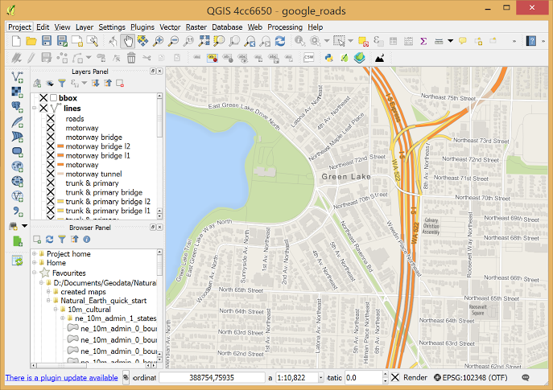
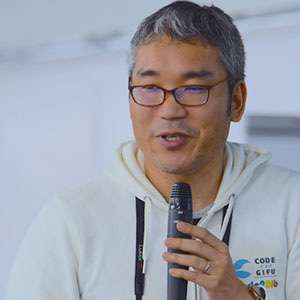
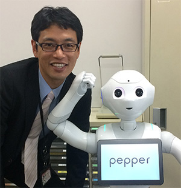

2018年8月24日(金)ハンズオン
2018年8月25日(土)セッション
@愛知大学 名古屋キャンパス 4階

FOSS4Gについて
FOSS4GとはFree Open Source Software for GeoSpatialの略で、オープンソースの地理情報ソフトウェア(GIS)群です。
またそれらについて事例紹介や体験学習を提供する各地域で開催されるイベント名でもあります。
FOSS4Gは国際非営利組織のOSGeo財団により支援され、日本における公式の支部としてOSGeo財団日本支部(OSGeo.JP)が活動しています。
FOSS4G TOKAI 2018では大きく3つのパートに分けてお届けします。
Code of Conduct(行動規範)
FOSS4G TOKAIでは、皆様に心地よく、そして楽しく参加していただけるよう、行動規範を設けています。 私たちは、性別、年齢、性的指向、身体的特徴、人種や職業、思想や信条や生き方、技術力や技術の選択・手法などのさまざまな個人のありかたに対して、ハラスメントを許容しません。 もしハラスメントや侮辱的言動、イベントへの妨害となる行為や周囲を不快にする言動を取った場合、私たちは当該参加者に退出を求めたり、今後の参加をお断りしたり、法的措置をとる場合があります。 私たちは、FOSS4G TOKAIの全ての参加者に対して、行動規範に従うことを求めています。 行動規範の全文はこちらのページでご覧ください。
QGIS入門編

初心者を対象とした無料のデスクトップGIS「QGIS」の基礎的な操作方法を、実際のデータを用いながら学習します。
- 講師：斎藤 直正(株式会社 エムエスケー)
- 基礎知識：PCの基本的な操作
- 事前準備：QGIS 3.2（3.1以降でも大丈夫だと思います。）
QGISのインストールには相当な時間が掛かる場合が想定されます。必ず事前のインストールをお願いします。
また、OSはWindows 10を想定しております。基本的にはWindows 7以降で動作可能であると思われますが、他のOSに関しては不具合が発生する場合があることをご承知おき頂きますようよろしくお願い致します。（可能な限りにおいて、OS依存にはならぬよう配慮は致します。） - 定員：25名
Leafletとオープンストリートマップを利用したオープンデータの可視化
自治体が提供しているオープンデータを可視化してみましょう。このハンズオンでは，JavaScriptライブラリであるLeafletを用いて、オープンストリートマップを表示し、オープンデータとして提供されている観光情報をマッピングします。
- 講師：向 直人(椙山女学園大学 文化情報学部 文化情報学科)
- 基礎知識：HTML, CSS, JavaScript等、Web技術の初級程度の知識
- 事前準備：Unicodeに対応するテキストエディタ、モダンブラウザ（Chrome推奨）がインストールされており、インターネットに無線で接続できるPC。
- 定員：25名
セッションタイムテーブル
| 9:30 | 受付開始 |
|---|---|
| 10:00 | 開会挨拶 |
| 10:10 | あらためまして、OSGeo.JPです！ 岩崎亘典 |
| 10:30 | モビリティデータの活用とGeoVisTech 〜Kepler.glとUber Movementに触れて〜 瀬戸寿一 |
| 10:50 | 路線図から考える公共交通の位置情報 伊藤浩之 |
| 11:10 | 休憩 |
| 11:20 | 山の中をスマフォで歩いてログを残そう。汗と涙の思ひ出トレッキングのススメ 國枝裕介 |
| 11:40 | ロケーションデータとテクノロジーの力で世界中に驚きを届ける(株)ナイトレイの実態 大橋正治 |
| 12:00 | 休憩 |
| 13:05 | EBPMを支えるビジュアライゼーションのチカラ 秋山祐樹 |
| 13:25 | 車載動画をFOSS4Gで調理する!? 澤田学 |
| 13:45 | mago3Dによる3次元マルチスケールデータ可視化システム開発 林博文 x Cheon JeongDae x Kyoung-Sook Kim x 上田直生 |
| 14:05 | 休憩 |
| 14:15 | Yahoo! MAPにおけるARの活用事例 徳元 健太 |
| 14:35 | QGISを使った消防業務の高度化 高橋桜也 |
| 14:55 | MySQL 8.0 で強化されたGIS機能のご紹介(仮) 山﨑由章 |
| 15:10 | MySQLのGeometry型とJavaScriptのGeolocation APIの活用事例 堀悟大 |
| 15:15 | 休憩 |
| 15:35 | deck.glを利用した、マップ上に移動体の情報を表示するライブラリの開発について 堀悟大 |
| 15:55 | GeoDjangoでWEB地図をつくろう 榎本真美 |
| 16:15 | FOSS4GとひなたGIS 落合謙次 |
| 16:35 | 閉会挨拶 |
| 17:00 | 閉会 |
※タイムテーブルは予告なく変更になる場合がございます。予めご了承ください。
セッション紹介
事例紹介 10:30〜10:50
モビリティデータの活用とGeoVisTech 〜Kepler.glとUber Movementに触れて〜
近年、UberやMapboxが、人びとの移動データを視覚化し分析するプラットフォームとしてKepler.glなどをオープンソースで提供し、Uber Movementなどの取り組みにより都市の交通計画にも活用可能なデータ提供を始めています。この講演では主に上記2つの事例から、ジオビジュアライゼーション技術の動向についてご紹介します。
瀬戸寿一(東京大学空間情報科学研究センター)
専門は社会地理学・地理情報科学で、特に参加型GISやオープンデータ＆シビックテックについて実践的に研究しています。2009年よりOSGeo.JP運営委員で、OSGeo財団のCharter Memberです。
事例紹介 10:50〜11:10
路線図から考える公共交通の位置情報
位置情報と親和性の高いはずの公共交通。しかし、未だにすべてのバス停の位置が地図上で見られないなど、まだまだ改善すべき点は多い。公共交通をより便利にわかりやすくするために、路線図や位置情報で実現できることがあるのではないか。
伊藤浩之(公共交通利用促進ネットワーク)
1997年WEBサイト「路線図ドットコム」を開始。2005年「公共交通利用促進ネットワーク」を設立し、本業の傍ら公共交通利用促進活動に取り組む。2018年フリーランスとなり、公共交通データ整備を通じて公共交通利便性向上に努めている。
事例紹介 11:20〜11:40
山の中をスマフォで歩いてログを残そう。汗と涙の思ひ出トレッキングのススメ
山歩きをされる方向けに、スマートフォン+QGISで自分の山行トレッキングの可視化をすることのメリットと、あくまでも一例ですが、私のやり方などをご紹介させていただきます。
國枝裕介(NPO法人森とIT)
森林空間の活性化を目指す特定非営利活動法人の理事長です。林業ハッカソンの運営や、スマートフォンを用いたオリエンテーリングアプリの開発などを行なっています。
事例紹介 11:40〜12:00
ロケーションデータとテクノロジーの力で世界中に驚きを届ける(株)ナイトレイの実態
主にロケーション解析データを軸にインバウンド対策を成功に導くことを目的としたインバウンド対策総合支援サービス「inbound insight(インバウンドインサイト)」を運営している企業です。観光ビッグデータ分析ソリューション、統計データ分析ソリューション、インバウンド対策コンシェルジュを組み合わせることで、現状把握から施策実行まで最適なインバウンド対策支援をご提案します。社内ではQGISも使ったりしていますのでその辺もお話できればと思います。
大橋正治(株式会社ナイトレイ(OSGeo財団日本支部))
- 地図や位ロケーションデータを活用したソリューション営業がバックグラウンド
- 2017年7月ナイトレイに参画
- セールス＆マーケティング部門長として日々邁進中
- 2012年よりOSGeo.JPの運営委員
- 前職は、某海道地図
特別講演 13:05〜13:25
EBPMを支えるビジュアライゼーションのチカラ
我が国では近年、データという根拠に基づいて政策を立案し、政府や自治体のスマート化を実現するEBPM（Evidence Based Policy Making）の推進が本格的に始まりました。EBPMに不可欠なデータのビジュアライゼーションについて紹介し、その可能性と現状の課題について議論します。
秋山祐樹(東京大学空間情報科学研究センター)
東京大学空間情報科学研究センター 助教。博士（環境学）。専門は空間情報科学。空間情報科学に関する論文は計200編以上。国内外の賞も多数受賞しています。マイクロジオデータ研究会会長、超スマート自治体連携研究協議会会長、国交省国土交通政策研究所客員研究官、某企業の技術顧問など、産官学でマルチに活躍（しているつもりです）。
事例紹介 13:25〜13:45
車載動画をFOSS4Gで調理する!?
私は、車載動画にすごくはまっています。はまっているうちに車載動画の活用の可能性について考えるようになりました。YouTubeにアップされている動画、自分自身で撮影した動画そのものを楽しむのもいいでしょう!また、OSMを描くためのツールとして、動画をVLCで静止画像化して位置情報を付与しMapillaryにアップロードする、など様々な可能性があると思います。車載動画をFOSS4Gで調理して活用する方法や可能性をお話ししたいと思います。
澤田学(オープンデータ京都実践会)
事例紹介 13:45〜14:05
mago3Dによる3次元マルチスケールデータ可視化システム開発
ICTの全面的な活用（ICT土工)よる今後のCIM導入を充実・加速 させるためには、３次元データの共有環境が必要不可欠となっている。この環境構築をオープンソースを用いて実現する「mago3D」の具体なプラットフォームに関する産総研の3次元モデルデータ共有の事例紹介を行う。
林博文 x Cheon JeongDae x Kyoung-Sook Kim x 上田直生(応用技術株式会社 x Gaia3D x 産業技術総合研究所 x ロカポイント)
林博文は、応用技術株式会社においてi-Constructionおよびモニタリング系の開発を行なっている。Cheon JeongDaeはGaia3D.incにおいて、mago3Dのコアパッケージ開発を行なっている。Kyoung-Sook Kimは、産業技術総合研究所においてスーパーコンピュータ基盤の可視化技術プラットフォームの開発を行なっている。
事例紹介 14:15〜14:35
Yahoo! MAPにおけるARの活用事例
iOS向けのYahoo! MAPアプリでは、ARを使ったナビゲーションをサポートするARモードという機能を提供しています。本公演では、実際にどのようにARモードを開発したかについてお話します。
徳元 健太(ヤフー株式会社)
2013年度にヤフー株式会社に新卒入社。入社してからは名古屋支社でYahoo! MAPのiOSアプリ開発を中心にWeb APIの開発なども担当。 最近ではARKitを使って徒歩ナビゲーションをサポートするARモード機能の開発に従事している。
事例紹介 14:35〜14:55
QGISを使った消防業務の高度化
水利設備は消火対象物にたいして一定基準で配備されることとなっており、その充足率は、これまで各市の消防職員が紙地図に手書きでメッシュを入れ、メッシュの中にある水利施設を数えて調べていた。今回、近隣消防からの依頼によって、QGISを使って彼らの業務支援を行った。
高橋桜也(中部大学生命健康学部)
大学で救急救命士の資格取得を目指し、将来消防職員になることを希望している大学4年生です。ただいま採用試験の真っ只中。消防業務の予防業務の中で、GISが役にたつと感じ、GISの勉強を始めました。GISが使える消防職員を目指しています。
事例紹介 14:55〜15:10
MySQL 8.0で強化されたGIS機能のご紹介(仮)
このセッションでは、2018年4月に製品版がリリースされたMySQL 8.0でのGIS機能の強化点についてご紹介させて頂きます。MySQLではMySQL 5.7でGIS機能を刷新し、Boost.GeometryライブラリをベースにしたGIS機能を実装しましたが、その後も積極的にGIS機能を強化しています。
山﨑 由章(日本オラクル株式会社 MySQL GBU)
MySQLのセールスコンサルタント。元々はOracleデータベースのコンサルティング、サポート等に従事していたが、オープンソースとフリーソフトウェア（自由なソフトウェア）の世界に興味を持ち、MySQLの仕事を始める。趣味は旅行と美味しいものを食べること。
事例紹介 15:10〜15:15
MySQLのGeometry型とJavaScriptのGeolocation APIの活用事例
弊社が開発しているCMS（a-blog cms）では MySQLのGIS機能を活用しています。このセッションでは、どのようにGIS機能を活用しているか、その活用例と技術的説明をさせていただきます。
堀 悟大(有限会社アップルップル)
JavaScriptが大好きなフロントエンドエンジニア、特にReactを使ったUIのブラッシュアップが得意。Nagoya.jsというJavaScriptの勉強会の主催もしている。
事例紹介 15:35〜15:55
deck.glを利用した、マップ上に移動体の情報を表示するライブラリの開発について
Uber社が開発した deck.glを利用すると、WebGLの仕組みを詳しく理解していなくても簡単にWebGL上にマップや移動物体を表示できます。さらに、React Reduxを組み合わせることによって、より移動物体やデータの管理がしやすくなりました。ソースをお見せしながら実際にどのようにデータ管理をしているのか、そのフローをご紹介します。
堀 悟大(有限会社アップルップル)
JavaScriptが大好きなフロントエンドエンジニア、特にReactを使ったUIのブラッシュアップが得意。Nagoya.jsというJavaScriptの勉強会の主催もしている。
事例紹介 15:55〜16:15
GeoDjangoでWEB地図をつくろう
PythonのWebフレームワークDjangoを使ってマップを作ってみました。PostgreSQL/PostGIS + Django で、WebGISアプリケーションを作成する方法をご紹介します。かわいい地図を作りましょう。
榎本真美(Django Girls Tokyo)
東京でシビックテックしたり、女性向けにPythonのワークショップしています。
特別講演 16:15〜16:35
FOSS4GとひなたGIS
ひなたGISを動かしているライブラリ達を軸にしてお話しします。
落合 謙次(宮崎県総合政策部統計調査課)
猫好きで地図が読めなくて方向音痴です！でもWEBGISを触っています！
運営スタッフ
FOSS4G TOKAIは有志がボランティアで運営しています。※ここに掲載している以外にもスタッフがいます。

石井 哲治 (Code for Gifu)
GISは素人ですが、イベントの裏方としてIT周りを担当します。
伊藤 永 (トヨタマップマスター)
懇親会の代表です。ぜひぜひ気軽に参加して下さい。LTも大募集中です。

岩田 員典 (愛知大学)
会場を用意する仕事だけしました。後は他の人にお任せしてます。
植田 粋美 (OSGeo.jp/株式会社オービタルネット)
自称受付嬢です。
坂元 恭一 (株式会社オービタルネット)
司会をします
鈴木 秀和 (名城大学)
Let 's enjoy Geo together!
宮内 はじめ (OSGeo.JP/E2D3/Code for Nagoya)
このWEBサイト作ったり、当日は会場をウロウロしてますー。
向 直人 (椙山女学園大学 文化情報学部)
ハンズオンの講師も務めます。興味があれば是非ご参加ください。
会場へのアクセス
名古屋駅より徒歩約10分
愛知大学 名古屋キャンパス 4階
Google Maps
最新情報/お問い合せはfacebook、twitter等でお知らせ/受付けています。よろしければフォローしてください。